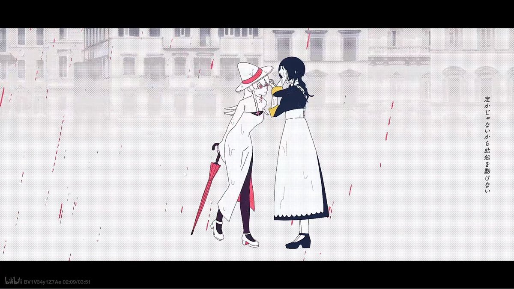
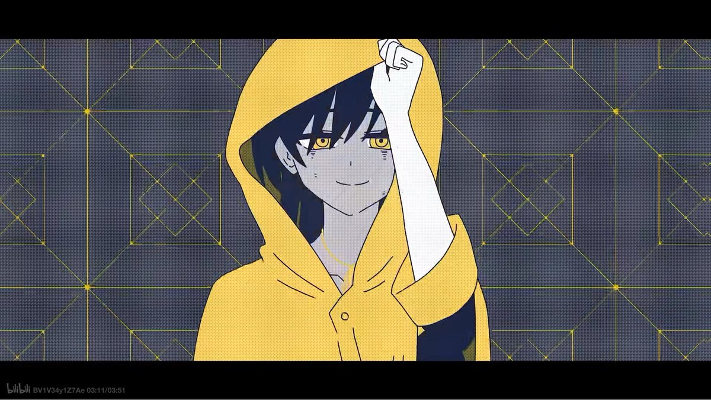

水月 郁寧
@lysosome807
「僕らが離れるなら，僕らが迷うなら，
その度に何回も繋がれる様に」
是你教予了我爱，却将我拦在门外。如果我对你的渴望终究是罪恶，如果我们终将分别，那么就让我成为你的犯人吧，在逃离现实的幻想中，我们千百次重逢，永不分开。


긔엑
@wa_gu0
님들아 저희 최고의 백합 뮤비 말하기 놀이해요
일단 저부터 https://t.co/PUeGffNo5l